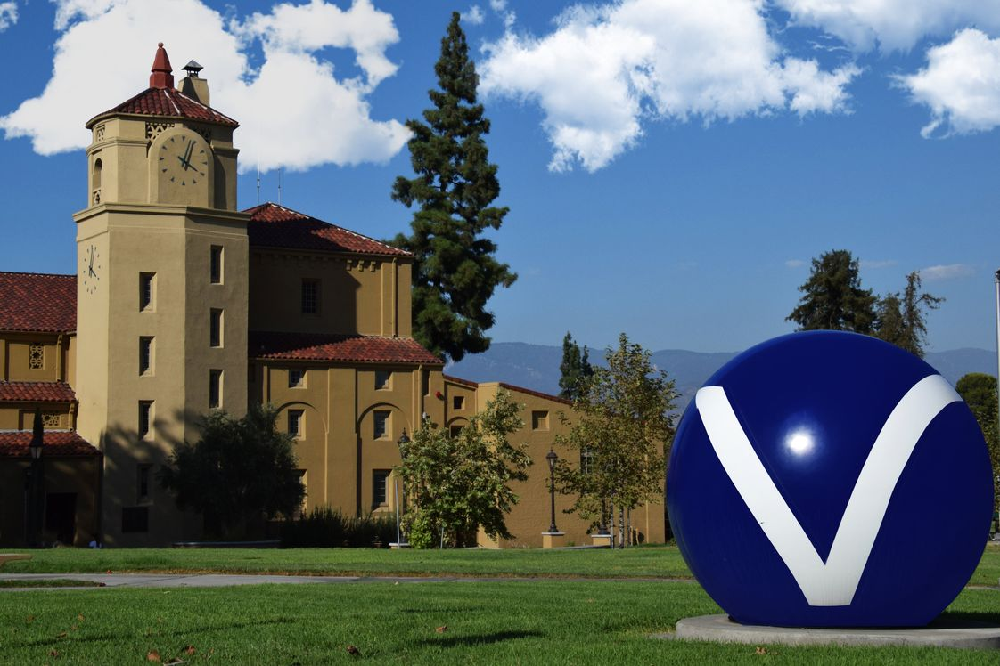
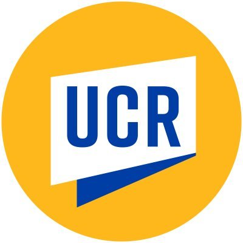
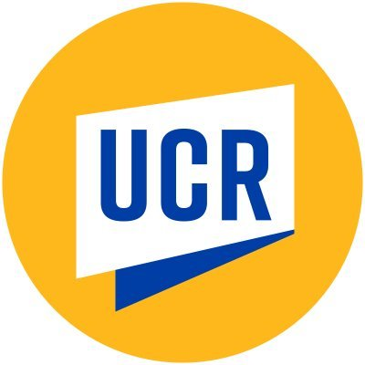
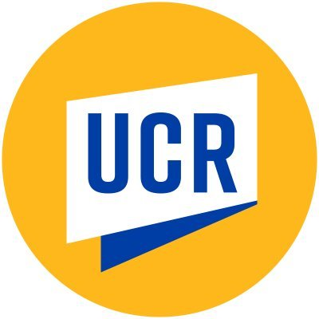

Patrick Davis
Passionate and dedicated History Major at the University of California, Riverside, with a focus on African American History. Committed to exploring the rich narratives and experiences that have shaped the African American community throughout history. At University of California Riverside, my coursework has revolved around racial history, providing me with a deep understanding of the complexities and challenges faced by different communities. This has fostered a strong interest in exploring the untold stories and contributions of African Americans, and the profound impact they have had on society.
In addition to my academic pursuits, I actively engage in community service, recognizing the importance of giving back to the local community. I have been involved with Project Fighting Chance, a non-profit organization dedicated to working with at-risk youth. Through this experience, I have developed essential skills in mentoring, leadership, and creating positive change within the community.
Passionate about utilizing historical knowledge and community engagement to promote social justice and equality, I am eager to apply my skills and contribute to initiatives that empower marginalized communities. With a strong foundation in African American History and a commitment to service, I seek to make a meaningful impact on the world.
Experience
Student Volunteer
• Collaborated with students to complete homework assignments, identify lagging skills and correct weaknesses.
• Helped with administrative support, including managing incoming calls, coordinating files and sorting mail.
• Prepared materials and assisted with activities that were designed to be enriching and engaging for all students involved
Student Volunteer
• Assisted teachers with classroom management and document coordination to maintain a positive classroom environment
• Took attendance, graded assignments and maintained student records to assist teachers with administrative tasks and maintain smooth daily operations
Courtesy Clerk
• Offer to assist customers in locating items on the sales floor
• Collect returned items from the customer service counter or cash registers to the appropriate place
• Tidy shelves and move out-of-place items to their proper shelves
• Greeted and Welcomed Customers
Education
San Bernadino Valley Community College
San Bernardino Valley Community College
University of California Riverside
Portfolio

 

